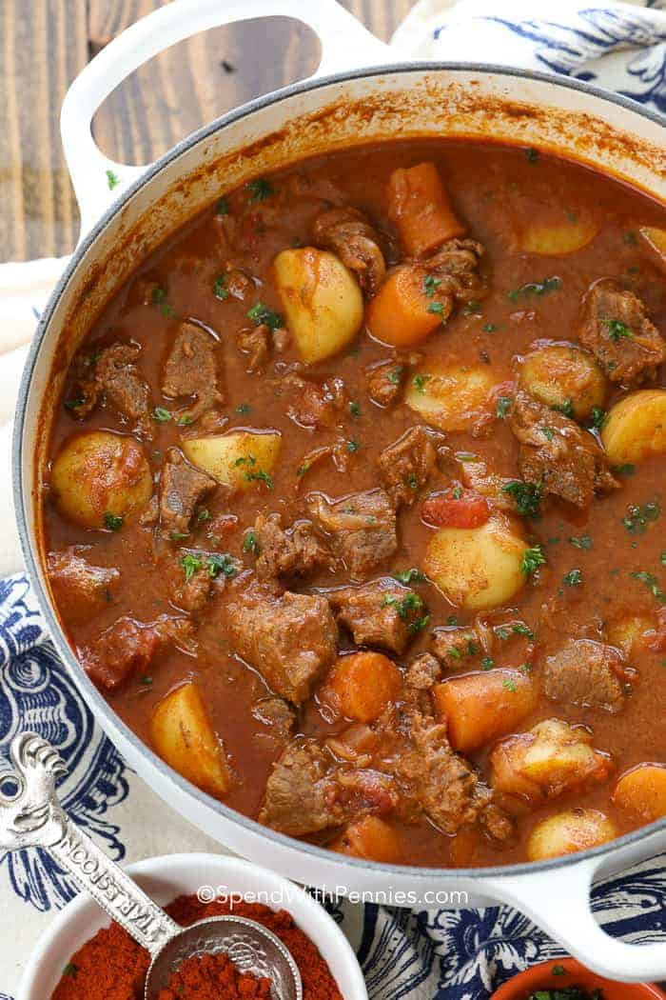

Goulash soep recept
Lijst met ingrediënten:
- 1 eetlepel olijfolie
- 400 g beef, in blokjes gesneden
- 1 middelgrote ui
- 1 middelgrote wortel
- 3 teentejs knoflook
- 1 theelepel zoete paprika
- 1.5 beker Massel beef bouillon
- 400 g voorgesneden tomaten
- 450 g kruimige aardappelen
- kookroom
Stappen
